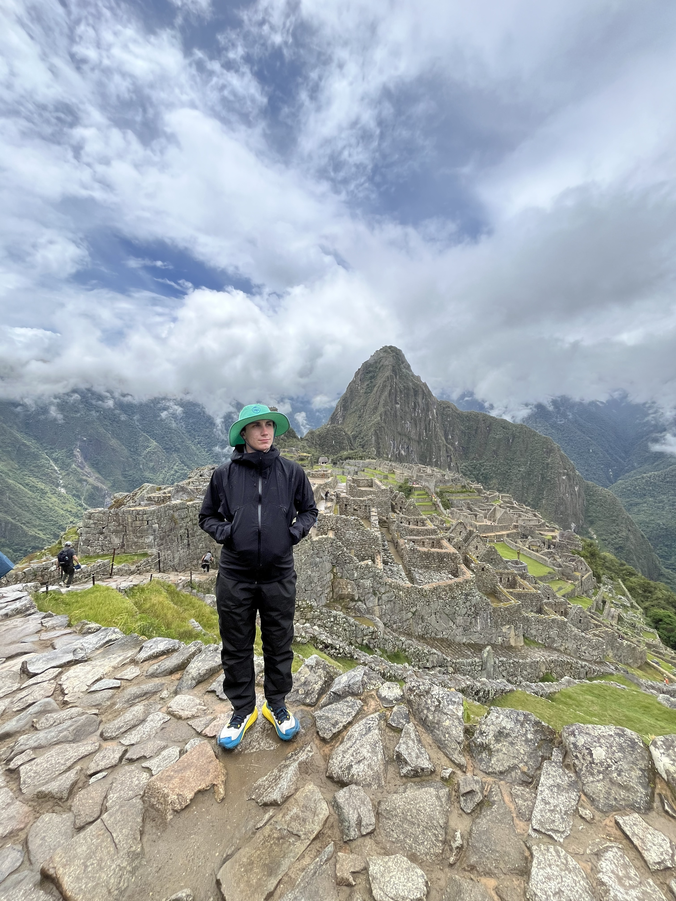
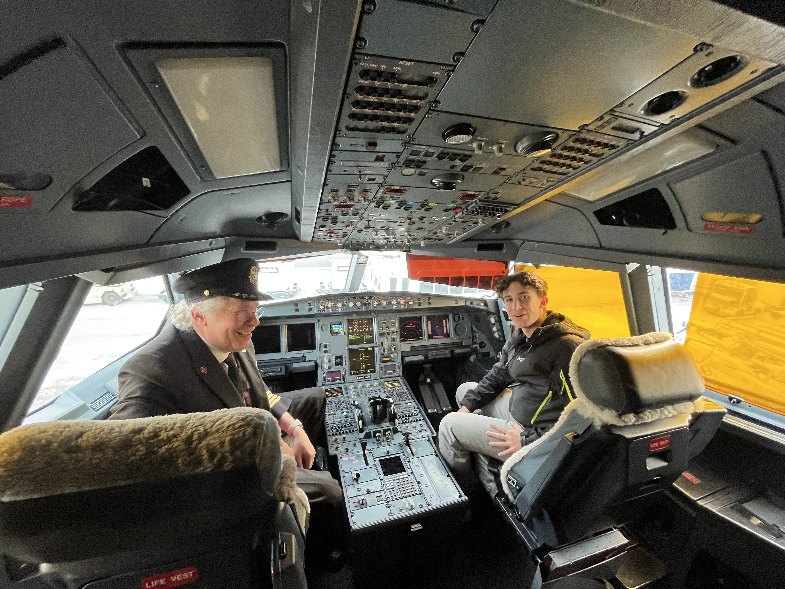
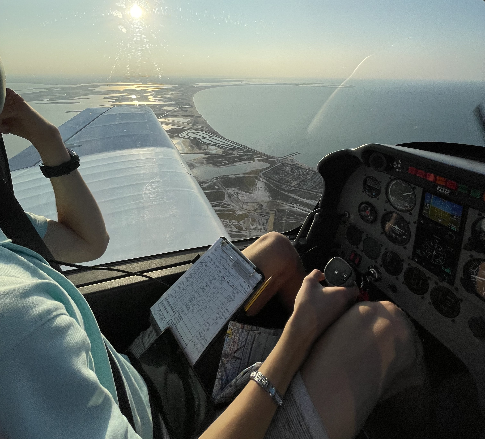
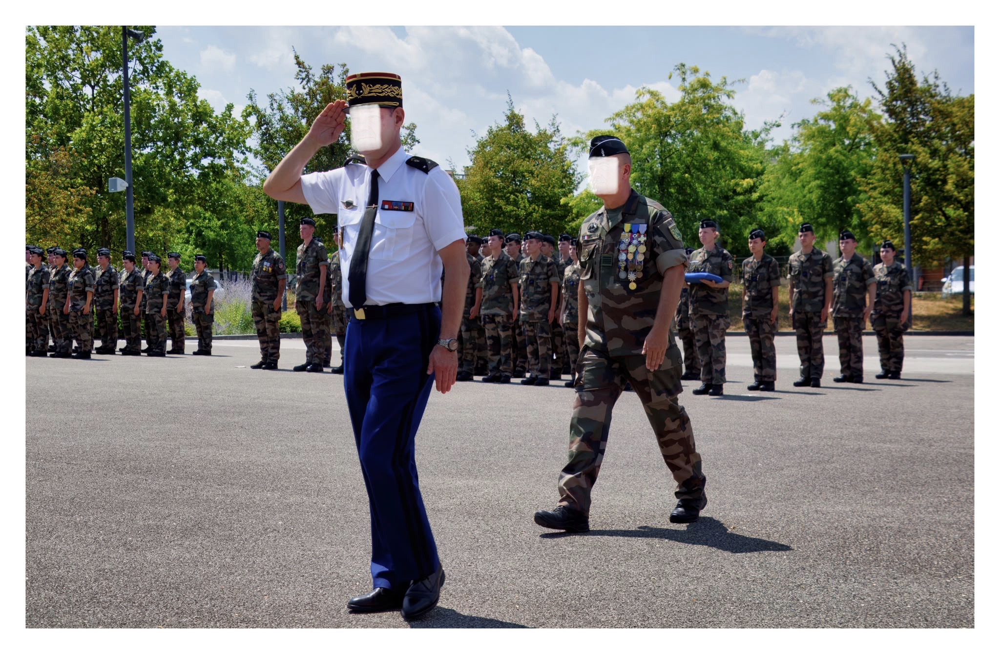
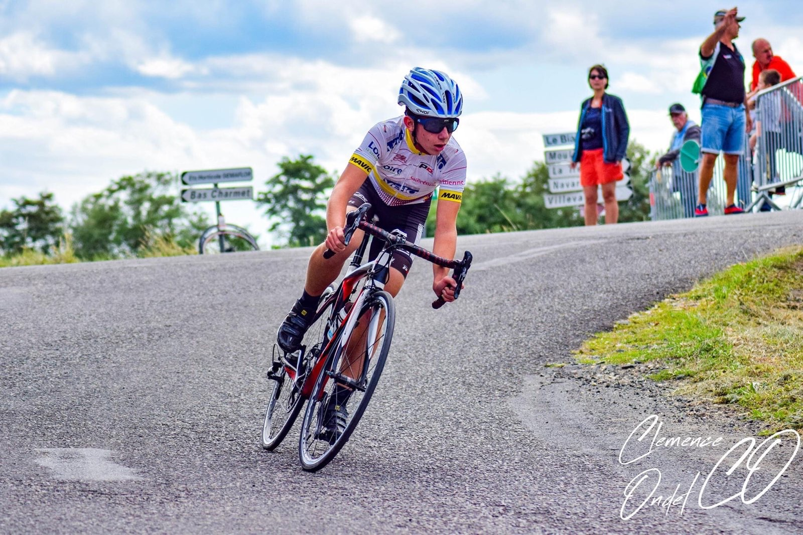
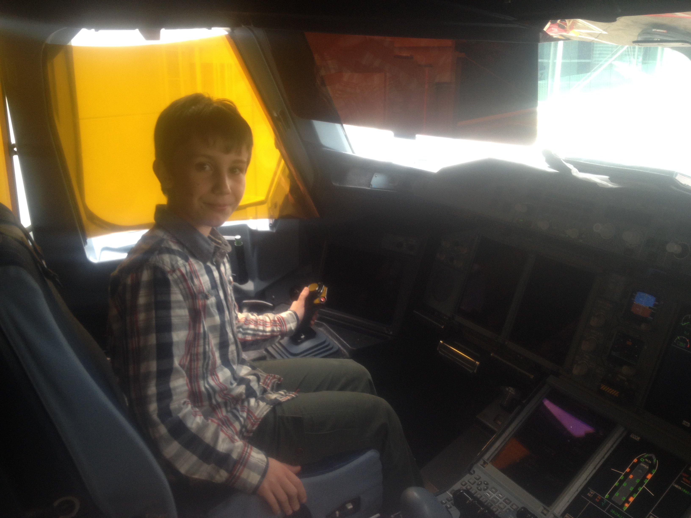
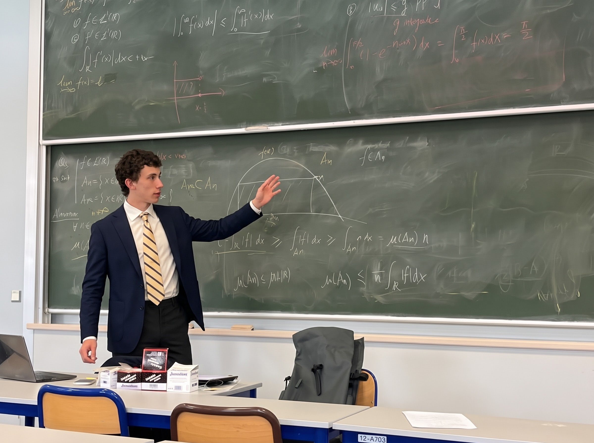

Profil & SynthèseProfile & Summary
Exigence académique, rigueur militaire et passion pour la technique Academic excellence, military discipline, and passion for engineering
Actuellement étudiant en 1ère année d'école d'ingénieur à l'ENSEEIHT (Toulouse INP) au sein du département MF2E (Mécanique, Fluides, Énergétique & Environnement), j'ai construit un parcours fondé sur la rigueur scientifique, l'esprit d'équipe et le dépassement de soi.
Après trois années intensives en Classes Préparatoires aux Grandes Écoles (PCSI puis PC / PC* 5/2 au Lycée Claude-Fauriel de Saint-Étienne), j'ai développé une solide capacité d'analyse, d'adaptation sous pression et de résolution méthodique de problèmes complexes.
En parallèle de mes études d'ingénieur, je suis engagé comme Militaire de Réserve Opérationnelle (Brigadier - Gendarmerie Nationale) au sein du SRJ 43. Cet engagement terrain en unité d'intervention (CIRT) ainsi que sur des missions nationales (Poséidon, DHPP, DEPP) m'apporte une grande discipline, le sens du collectif, du sang-froid et la maîtrise de la gestion de crise.
Currently a 1st-year engineering student at ENSEEIHT (Toulouse INP) in the MF2E department (Fluid Mechanics, Energetics & Environment), I have built a path centered on scientific rigor, teamwork, and personal achievement.
Following three intensive years in French Intensive STEM Classes (CPGE PCSI / PC 5/2 at Lycée Claude-Fauriel in Saint-Étienne), I developed strong analytical skills, adaptability under pressure, and a structured approach to solving complex engineering problems.
Parallel to my studies, I serve as an Operational Military Reservist (Rank of Brigadier / Corporal - French Gendarmerie Nationale) in the SRJ 43 groupement. Field duty with intervention units (CIRT) and deployment on national security ops (Poséidon, DHPP, DEPP) provide me with high discipline, composure, situational awareness, and crisis management skills.
Parcours AcadémiqueAcademic Background
Formation scientifique et technologique de haut niveau High-level scientific and technological education
Diplôme d'Ingénieur — Mécanique, Fluides & Énergétique (MF2E) Master of Engineering — Fluid Mechanics, Energetics & Environment
ENSEEIHT (Toulouse INP) — Toulouse, France
- Aérodynamique & Mécanique des fluides : Écoulements internes/externes, turbomachines, transferts thermiques et thermodynamique appliquée.
- Fiabilité & Systèmes propulsifs : Analyse des contraintes structurales, simulation numérique (CFD/FEM), diagnostic technique appliqué à l'aéronautique et à la gestion de flotte/MCO.
- Aerodynamics & Fluid Mechanics: Internal/external flow dynamics, turbomachinery, heat transfer, and applied thermodynamics.
- Reliability & Propulsion Systems: Structural stress analysis, numerical simulation (CFD/FEM), technical diagnostics applied to aerospace fleet maintenance (MRO).
Classes Préparatoires aux Grandes Écoles (CPGE) — PCSI / PC (5/2) Intensive Undergraduate STEM Program (CPGE) — PCSI / PC (5/2)
Lycée Claude-Fauriel — Saint-Étienne, France
- Secteur Scientifique Intensif : Physique, Chimie, Mathématiques & Sciences de l'Ingénieur.
- Solides bases théoriques : Mécanique du solide, cinématique, thermodynamique des cycles, équations différentielles et calcul matriciel.
- Acquisition d'une méthodologie de travail rigoureuse et capacité d'exécution sous contrainte temporelle.
- Intensive STEM Program: Physics, Chemistry, Advanced Mathematics & Engineering Sciences.
- Solid theoretical foundations: Solid mechanics, kinematics, cycle thermodynamics, differential equations, and linear algebra.
- Rigorous work methodology and ability to deliver under high pressure and tight deadlines.
Baccalauréat Général Scientifique — Mention Bien French High School Diploma (Baccalauréat) — With Honors
Lycée Léonard de Vinci — Monistrol-sur-Loire (Haute-Loire)
Spécialités : Physique-Chimie, Mathématiques & Sciences de l'Ingénieur. Option Mathématiques Expertes.
Majors: Physics & Chemistry, Mathematics, Engineering Sciences. Advanced Mathematics option.
Expérience Opérationnelle & ProOperational & Work Experience
Engagement militaire, missions de sécurité publique et expérience terrain Military reserve service, public security missions, and hands-on experience
Gendarme Réserviste — Grade de Brigadier Gendarmerie Reservist — Rank of Brigadier
Gendarmerie Nationale — SRJ 43 (Haute-Loire)
Missions de renfort tactique CIRT : Déploiement au sein de la Compagnie d'Intervention de la Réserve Territoriale ; exécution d'ordres en environnement complexe et gestion du stress.
Habilitations & Dispositifs : Titulaire APJA, CIAPT (PA MAS G1S, PIE, BPT). Engagement sur les missions Poséidon, DHPP et DEPP.
Compétences clés : Rigueur d'exécution, respect strict des SOP, esprit d'équipe et sang-froid.
Tactical Reinforcement Missions (CIRT): Deployment within the Territorial Reserve Intervention Unit; executing orders in complex environments and stress management.
Qualifications & Missions: Certified Judicial Police Assistant (APJA), CIAPT firearms certified (PA MAS G1S, Taser, Baton). Deployed on Poséidon, DHPP, and DEPP security operations.
Key Skills: Execution rigor, strict adherence to SOPs, teamwork, and composure under stress.
Employé de Salle / Serveur Restaurant Waiter
Secteur de la Restauration
Service dynamique lors des coups de feu estivaux, travail d'équipe en flux tendu, relation client et sens du service.
Gestion de l'organisation sous contrainte de temps et maintien du rythme de travail intense.
Fast-paced front-of-house service during peak summer periods, team collaboration under pressure, and customer relation skills.
Time management and maintaining high output in demanding conditions.
Réseau & Échanges Professionnels Professional Network & Mentoring
Entretiens métiers et retours d'expérience dans le secteur aéronautique Career interviews and practical insight into the aerospace industry
Afin d'affiner ma connaissance terrain des métiers de l'ingénierie et de la maintenance aéronautique (MCO/MRO), j'ai mené une démarche active d'échanges et d'entretiens via la plateforme MyJobGlasses ainsi qu'en réseau direct auprès de professionnels chevronnés du secteur :
To build deep insight into aerospace engineering and fleet maintenance (MRO), I actively conducted informational interviews and mentoring discussions via MyJobGlasses and personal networking with seasoned industry professionals:
Ancien ingénieur en mécanique chez Airbus.
Former Mechanical Engineer at Airbus.
Échanges sur la conception mécanique, les méthodes d'ingénierie et les exigences des bureaux d'études aéronautiques.
Discussions on mechanical design, engineering methods, and aerospace design office requirements.
Ancien ingénieur chez Dassault Aviation.
Former Engineer at Dassault Aviation.
Retours d'expérience sur les systèmes aéronautiques militaires et civils, la gestion de projet et la rigueur d'ingénierie.
Insights on defense and civil aircraft systems, engineering project management, and high-standard design execution.
Mécanicien entretien flotte chez Air France.
Fleet Maintenance Mechanic at Air France.
Échanges pragmatiques sur les réalités du MCO/MRO, le suivi de maintenance opérationnelle et les contraintes d'exploitation de flotte.
Practical discussions on operational MRO realities, line maintenance workflows, and fleet readiness constraints.
Compétences Techniques & Informatiques Technical & Engineering Skills
Outils de l'ingénieur, simulation et capacités pratiques Engineering tools, numerical modeling, and practical mechanics
Programmation & Calcul Scientifique Programming & Scientific Computing
- • Python : Modélisation physique, analyse de données, résolution numérique.
- • Fortran 90 : Calcul scientifique à haute performance et modélisation.
- • Git & GitHub : Gestion de versions, dépôts de code et travail collaboratif.
- • Python: Physical modeling, data analysis, numerical solvers.
- • Fortran 90: High-performance numerical computing and scientific simulation.
- • Git & GitHub: Version control, repository management, and collaborative development.
Sciences & Mécanique Pratique Engineering Sciences & Practical Mechanics
- • Mécanique des Fluides, Aérodynamique & Thermodynamique des sous-systèmes.
- • Calcul de structures et dimensionnement mécanique.
- • Pratique mécanique : Bon niveau de bricolage, outillage manuel & électroportatif, montage/démontage et maintenance.
- • Fluid Dynamics, Aerodynamics & Subsystem Thermodynamics.
- • Structural mechanics and sizing calculation.
- • Practical mechanical aptitude: Hands-on DIY skills, power/manual tools, disassembly/assembly, and maintenance.
Engagements, Écologie & Géopolitique Commitments, Ecology & Geopolitics
Implication citoyenne et ouverture sur les grands enjeux contemporains Civic involvement and understanding of contemporary global issues
Staffeur Anti-HVSS — ENSEEIHT Anti-Sexual Harassment & Violence Volunteer — ENSEEIHT
Engagement actif dans la prévention des Harcèlements et des Violences Sexistes et Sexuelles au sein du campus. Veille, soutien et sensibilisation lors des événements étudiants.
Active participation in preventing sexual harassment and gender-based violence on campus. Event monitoring, peer support, and awareness initiatives.
Conférence du Général Michel Yakovleff General Michel Yakovleff Conference
Participation à la conférence de l'ancien vice-chef d'état-major du SHAPE (OTAN), axée sur l'analyse des grands changements géopolitiques et stratégiques mondiaux.
Attended key strategic lecture by the former Vice Chief of Staff of NATO's SHAPE, addressing global geopolitical dynamics and defense challenges.
Fresques du Climat & de l'Aéronautique Climate Fresk & Aviation Fresk
Participation à la Fresque du Climat (compréhension systémique des enjeux du dérèglement climatique) et à la Fresque de l'Aéronautique organisée à l'ENAC (décarbonation du secteur aérien).
Completed the Climate Fresk workshop (climate system dynamics) and the Aviation Fresk at ENAC (decarbonization pathways for aviation).
Atelier-Débat Spatial — ISAE-Supaéro Space Debate Workshop — ISAE-Supaéro
Participation aux échanges réflexifs autour des nouveaux enjeux de l'exploration spatiale, de la gouvernance orbitale et du NewSpace à l'ISAE-Supaéro.
Participated in discussions on future space exploration, orbital sustainability, and NewSpace dynamics at ISAE-Supaéro.
Voyages & Ouverture Internationale International Experience & Languages
Curiosité culturelle, adaptabilité et compétences linguistiques Cultural adaptability, open mindset, and linguistic skills
Exploration & Agilité Culturelle Global Mindset & Adaptability
Passionné de découvertes, j'ai eu l'opportunité de voyager à travers le monde entier. Ces expériences internationales ont façonné ma capacité d'adaptation, mon ouverture d'esprit et ma facilité à interagir avec des profils multiculturels.
Cette vision globale complète naturellement mon intérêt pour l'aéronautique et la défense, des secteurs interconnectés à l'échelle mondiale.
Passionate about discovering new environments, international travel has strengthened my adaptability, open-mindedness, and ease in multicultural team settings.
This global perspective naturally aligns with my goal of working in globalized industries such as aerospace and defense engineering.
LanguesLanguages
Passions & Dépassement de Soi Interests & Personal Pursuits
Aviation, sports de haute endurance et rigueur artistique Aviation, endurance sports, and artistic discipline
Aéronautique & Pilotage Aviation & Flight Training
- • BIA (Brevet d'Initiation Aéronautique) : Obtenu avec Mention.
- • PPL (Private Pilot License) : Formation pratique et théorique en cours.
- • Culture aéronautique approfondie, étude des facteurs humains, de la mécanique de vol et des procédures de sécurité.
- • BIA (Aeronautical Certificate): Earned with Honors.
- • PPL (Private Pilot License): Practical & theoretical training ongoing.
- • Flight mechanics, human factors, and aviation safety procedures.
Endurance & Discipline Endurance & Resilience
- • Cyclisme en compétition : Plus de 10 ans de pratique sur route avant la prépa.
- • Projet Ironman : Préparation physique et mentale intensive au format longue distance.
- • Capacité d'effort prolongé, gestion d'objectifs long terme et haute résilience.
- • Competitive Road Cycling: 10+ years of road cycling.
- • Ironman Preparation: Long-distance triathlon physical and mental conditioning.
- • Long-term focus, goal-oriented mindset, and resilience.
Pratique du Violon Violin Practice
- • Pratique instrumentale : Plus de 10 ans de pratique du violon.
- • Développement de l'écoute, de la rigueur personnelle, de l'assiduité et de la précision gestuelle.
- • Instrumental Practice: 10+ years playing the violin.
- • Cultivates focus, precision, patience, and rigorous attention to detail.
Galerie PhotosPhoto Gallery
Aperçu en images de mes projets, engagements et passions Visual overview of my projects, commitments, and interests







Restons en contact Let's Connect
Actuellement à la recherche d'opportunités, d'échanges techniques ou de projets d'ingénierie dans le domaine des fluides, des systèmes propulsifs, de la mécanique de flotte ou de l'aéronautique.
Open to technical discussions, engineering projects, and internship opportunities in fluid dynamics, propulsion systems, fleet maintenance, and aerospace engineering.
© 2026 Clément Tardy — Hébergé sur GitHub Pages